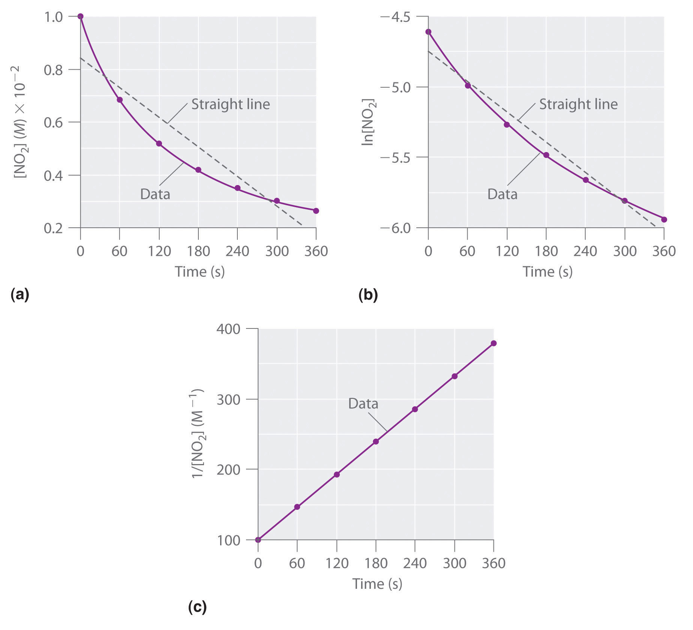
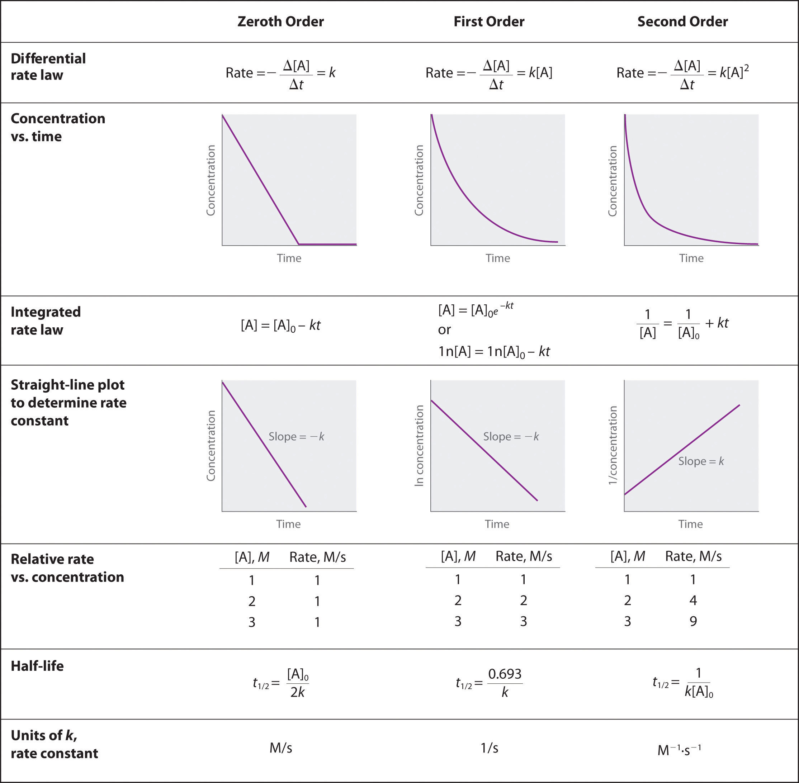

In Section 14.3 "Methods of Determining Reaction Order", you learned that the integrated rate law for each common type of reaction (zeroth, first, or second order in a single reactant) can be plotted as a straight line. Using these plots offers an alternative to the methods described for showing how reactant concentration changes with time and determining reaction order.
We will illustrate the use of these graphs by considering the thermal decomposition of NO2 gas at elevated temperatures, which occurs according to the following reaction:
Equation 14.26
Experimental data for this reaction at 330°C are listed in Table 14.5 "Concentration of NO"; they are provided as [NO2], ln[NO2], and 1/[NO2] versus time to correspond to the integrated rate laws for zeroth-, first-, and second-order reactions, respectively. The actual concentrations of NO2 are plotted versus time in part (a) in Figure 14.15 "The Decomposition of NO". Because the plot of [NO2] versus t is not a straight line, we know the reaction is not zeroth order in NO2. A plot of ln[NO2] versus t (part (b) in Figure 14.15 "The Decomposition of NO") shows us that the reaction is not first order in NO2 because a first-order reaction would give a straight line. Having eliminated zeroth-order and first-order behavior, we construct a plot of 1/[NO2] versus t (part (c) in Figure 14.15 "The Decomposition of NO"). This plot is a straight line, indicating that the reaction is second order in NO2.
Table 14.5 Concentration of NO2 as a Function of Time at 330°C
| Time (s) | [NO2] (M) | ln[NO2] | 1/[NO2] (M−1) |
|---|---|---|---|
| 0 | 1.00 × 10−2 | −4.605 | 100 |
| 60 | 6.83 × 10−3 | −4.986 | 146 |
| 120 | 5.18 × 10−3 | −5.263 | 193 |
| 180 | 4.18 × 10−3 | −5.477 | 239 |
| 240 | 3.50 × 10−3 | −5.655 | 286 |
| 300 | 3.01 × 10−3 | −5.806 | 332 |
| 360 | 2.64 × 10−3 | −5.937 | 379 |
Figure 14.15 The Decomposition of NO2
These plots show the decomposition of a sample of NO2 at 330°C as (a) the concentration of NO2 versus t, (b) the natural logarithm of [NO2] versus t, and (c) 1/[NO2] versus t.
We have just determined the reaction order using data from a single experiment by plotting the concentration of the reactant as a function of time. Because of the characteristic shapes of the lines shown in Figure 14.16 "Properties of Reactions That Obey Zeroth-, First-, and Second-Order Rate Laws", the graphs can be used to determine the reaction order of an unknown reaction. In contrast, the method described in Section 14.3 "Methods of Determining Reaction Order" required multiple experiments at different NO2 concentrations as well as accurate initial rates of reaction, which can be difficult to obtain for rapid reactions.
Figure 14.16 Properties of Reactions That Obey Zeroth-, First-, and Second-Order Rate Laws
Dinitrogen pentoxide (N2O5) decomposes to NO2 and O2 at relatively low temperatures in the following reaction:
2N2O5(soln) → 4NO2(soln) + O2(g)This reaction is carried out in a CCl4 solution at 45°C. The concentrations of N2O5 as a function of time are listed in the following table, together with the natural logarithms and reciprocal N2O5 concentrations. Plot a graph of the concentration versus t, ln concentration versus t, and 1/concentration versus t and then determine the rate law and calculate the rate constant.
| Time (s) | [N2O5] (M) | ln[N2O5] | 1/[N2O5] (M−1) |
|---|---|---|---|
| 0 | 0.0365 | −3.310 | 27.4 |
| 600 | 0.0274 | −3.597 | 36.5 |
| 1200 | 0.0206 | −3.882 | 48.5 |
| 1800 | 0.0157 | −4.154 | 63.7 |
| 2400 | 0.0117 | −4.448 | 85.5 |
| 3000 | 0.00860 | −4.756 | 116 |
| 3600 | 0.00640 | −5.051 | 156 |
Given: balanced chemical equation, reaction times, and concentrations
Asked for: graph of data, rate law, and rate constant
Strategy:
A Use the data in the table to separately plot concentration, the natural logarithm of the concentration, and the reciprocal of the concentration (the vertical axis) versus time (the horizontal axis). Compare the graphs with those in Figure 14.16 "Properties of Reactions That Obey Zeroth-, First-, and Second-Order Rate Laws" to determine the reaction order.
B Write the rate law for the reaction. Using the appropriate data from the table and the linear graph corresponding to the rate law for the reaction, calculate the slope of the plotted line to obtain the rate constant for the reaction.
Solution:
A Here are plots of [N2O5] versus t, ln[N2O5] versus t, and 1/[N2O5] versus t:
The plot of ln[N2O5] versus t gives a straight line, whereas the plots of [N2O5] versus t and 1/[N2O5] versus t do not. This means that the decomposition of N2O5 is first order in [N2O5].
B The rate law for the reaction is therefore
rate = k[N2O5]Calculating the rate constant is straightforward because we know that the slope of the plot of ln[A] versus t for a first-order reaction is −k. We can calculate the slope using any two points that lie on the line in the plot of ln[N2O5] versus t. Using the points for t = 0 and 3000 s,
Thus k = 4.820 × 10−4 s−1.
Exercise
1,3-Butadiene (CH2=CH—CH=CH2; C4H6) is a volatile and reactive organic molecule used in the production of rubber. Above room temperature, it reacts slowly to form products. Concentrations of C4H6 as a function of time at 326°C are listed in the following table along with ln[C4H6] and the reciprocal concentrations. Graph the data as concentration versus t, ln concentration versus t, and 1/concentration versus t. Then determine the reaction order in C4H6, the rate law, and the rate constant for the reaction.
| Time (s) | [C4H6] (M) | ln[C4H6] | 1/[C4H6] (M−1) |
|---|---|---|---|
| 0 | 1.72 × 10−2 | −4.063 | 58.1 |
| 900 | 1.43 × 10−2 | −4.247 | 69.9 |
| 1800 | 1.23 × 10−2 | −4.398 | 81.3 |
| 3600 | 9.52 × 10−3 | −4.654 | 105 |
| 6000 | 7.30 × 10−3 | −4.920 | 137 |
Answer:
second order in C4H6; rate = k[C4H6]2; k = 1.3 × 10−2 M−1·s−1
For a zeroth-order reaction, a plot of the concentration of any reactant versus time is a straight line with a slope of −k. For a first-order reaction, a plot of the natural logarithm of the concentration of a reactant versus time is a straight line with a slope of −k. For a second-order reaction, a plot of the inverse of the concentration of a reactant versus time is a straight line with a slope of k.
Compare first-order differential and integrated rate laws with respect to the following. Is there any information that can be obtained from the integrated rate law that cannot be obtained from the differential rate law?
In the single-step, second-order reaction 2A → products, how would a graph of [A] versus time compare to a plot of 1/[A] versus time? Which of these would be the most similar to the same set of graphs for A during the single-step, second-order reaction A + B → products? Explain.
For reactions of the same order, what is the relationship between the magnitude of the rate constant and the reaction rate? If you were comparing reactions with different orders, could the same arguments be made? Why?
The reaction rate increases as the rate constant increases. We cannot directly compare reaction rates and rate constants for reactions of different orders because they are not mathematically equivalent.
One method of using graphs to determine reaction order is to use relative rate information. Plotting the log of the relative rate versus log of relative concentration provides information about the reaction. Here is an example of data from a zeroth-order reaction:
| Relative [A] (M) | Relative Rate (M/s) |
|---|---|
| 1 | 1 |
| 2 | 1 |
| 3 | 1 |
Varying [A] does not alter the reaction rate. Using the relative rates in the table, generate plots of log(rate) versus log(concentration) for zeroth-, first- and second-order reactions. What does the slope of each line represent?
The table below follows the decomposition of N2O5 gas by examining the partial pressure of the gas as a function of time at 45°C. What is the reaction order? What is the rate constant? How long would it take for the pressure to reach 105 mmHg at 45°C?
| Time (s) | Pressure (mmHg) |
|---|---|
| 0 | 348 |
| 400 | 276 |
| 1600 | 156 |
| 3200 | 69 |
| 4800 | 33 |